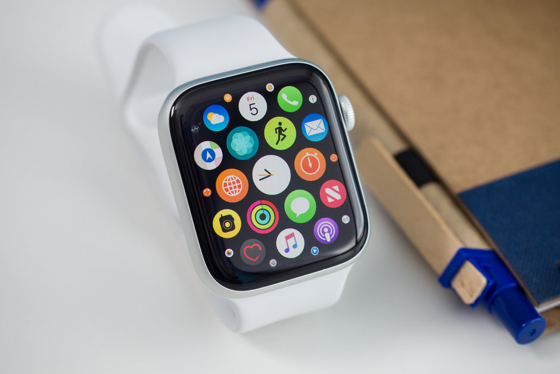

Apple brings back Walkie Talkie to Apple
Watch
Apple's die-hard fans should check this out.
Apple is today rolling out software updates across iOS, watchOS, and the HomePod as it prepares for much bigger releases with new features coming this fall. The iOS 12.4 release introduces a new "iPhone migration" option that "introduces the ability to wirelessly transfer data and migrate directly from an old iPhone to a new iPhone during setup," according to the update release notes. Apple has already offered a wireless transfer option between iOS devices, but it relies on iCloud for just about everything. The new method transfers a lot of content - app data, device settings, photos, etc. - directly from iPhone to iPhone. Apps must still be downloaded from the App Store after the migration step is complete, however. Apple says today's updates include a security fix that reenables the Walkie Talkie feature on the Apple Watch, which was briefly taken offline after a vulnerability was discovered that had the potential to allow someone to secretly listen in on another person's iPhone without consent; Apple said it hasn’t seen any indication that anyone took advantage of the exploit before it was reported. The latest watchOS update - version 5.3 - also further expands support for the Apple Watch's EKG feature and irregular heartbeat detection to Canada and Singapore.